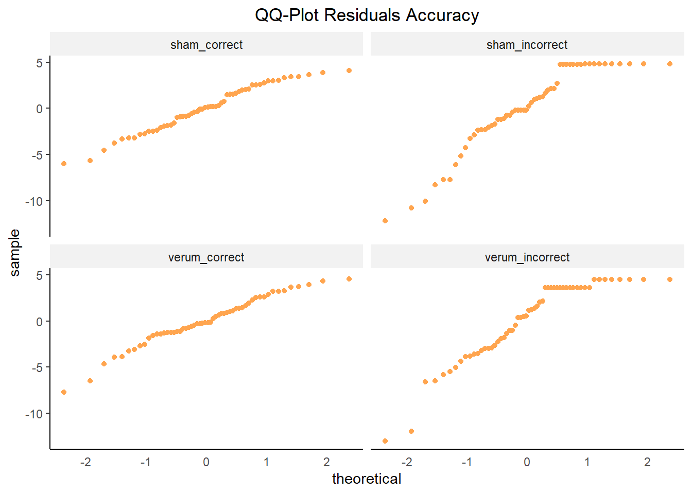

Behavioral Performance
Data Cleaning
# Load data
load(file = "./data/Single_Trial_Data.rda")
# Create some variables: numeric word accuracy, correctness of previous response, post-error accuracy (pea), and post-correct accuracy (pca)
# Important to do this before trial exclusion! Otherwise the previous trial in the table might not have been the previous trial in the task!
single_trial_data <- single_trial_data %>%
dplyr::mutate(
accuracy_numeric = ifelse(response_type == "correct", 1, 0),
accuracy_prev_trial = ifelse(lag(response_type == "correct", default = TRUE) == TRUE, "correct", "incorrect"),
pea = ifelse(lag(response_type == "correct") == FALSE & response_type == "correct", 1,
ifelse(lag(response_type == "correct") == FALSE & response_type == "incorrect", 0, NA)),
pca = ifelse(lag(response_type == "correct") == TRUE & response_type == "correct", 1,
ifelse(lag(response_type == "correct") == TRUE & response_type == "incorrect", 0, NA))
)
# Exclude missing responses, RT outliers and trials with ERP artifacts
single_trial_data_clean <- single_trial_data %>%
dplyr::filter(
response_type != "miss" &
rt_invalid == FALSE &
!is.nan(MFN_0_100_FCz)
) # (54998 of 55680 trials left)
# Create specific condition column (to exclude congruent errors if necessary)
single_trial_data_clean <- single_trial_data_clean %>%
dplyr::mutate(
condition = as.factor(paste0(stimulus_type, "_", response_type))
)
# Create column with single-trial PES (RTpost-error − RTpre-error for all CCEC sequences)
single_trial_data_clean$pes <- NA
# also make sure to exclude sequences where a trial was excluded in between (or when error occurred in first or last trial)
for (i in 3:(nrow(single_trial_data_clean)-1)) {
if (single_trial_data_clean[i,]$response_type == "incorrect" &
single_trial_data_clean[(i+1),]$response_type == "correct" &
single_trial_data_clean[(i-1),]$response_type == "correct" &
single_trial_data_clean[(i-2),]$response_type == "correct" &
single_trial_data_clean[(i+1),]$trial - single_trial_data_clean[(i-1),]$trial == 2) {
single_trial_data_clean[i,]$pes <- (single_trial_data_clean[(i+1),]$rt) - (single_trial_data_clean[(i-1),]$rt)
}
}
# Make categorical variables factors
single_trial_data_clean$participant_id <- as.factor(single_trial_data_clean$participant_id)
single_trial_data_clean$group <- as.factor(single_trial_data_clean$group)
single_trial_data_clean$session <- as.factor(single_trial_data_clean$session)
single_trial_data_clean$stimulation <- as.factor(single_trial_data_clean$stimulation)
single_trial_data_clean$stimulus_type <- as.factor(single_trial_data_clean$stimulus_type)
single_trial_data_clean$response_type <- as.factor(single_trial_data_clean$response_type)
single_trial_data_clean$response_type_2nd <- as.factor(single_trial_data_clean$response_type_2nd)
single_trial_data_clean$accuracy_prev_trial <- as.factor(single_trial_data_clean$accuracy_prev_trial)Trials were excluded from all analyses if RT was shorter than 100 ms or longer than 800 ms or if the response in a trial was missing. We further discarded trials containing artifacts in the EEG, i.e., a voltage difference exceeding 50 μV between two consecutive sampling points or 200 μV within an epoch.
# Calculate percentage of excluded trials
excluded_trials <- single_trial_data %>%
group_by(group, participant_id, session) %>%
dplyr::summarize(
invalid_rt = sum(!is.na(rt_invalid) & rt_invalid != FALSE) / length(participant_id) * 100,
misses = sum(response_type == "miss") / length(participant_id) * 100,
EEG_artifact = sum(is.nan(MFN_0_100_FCz)) / length(participant_id) * 100,
) %>%
group_by(group) %>%
# Calculate M and SD of the variables
dplyr::summarise_each(list(mean,sd,min,max), -c(participant_id, session))
# Create dataframe and change order of rows for display
table_excluded_trials <- as.data.frame(excluded_trials[,c(1,2,5,8,11,3,6,9,12,4,7,10,13)])
# Display percentage of excluded trials
my_table_template(table_excluded_trials,
caption = "Excluded Trials (in %)",
col_names = c("Group", "M", "SD", "min", "max", "M", "SD", "min", "max", "M", "SD", "min", "max"),
header_above_config = c(" " = 1, "RT < 100 / > 800 ms" = 4, "Misses" = 4, "EEG artifact" = 4)
)| Group | M | SD | min | max | M | SD | min | max | M | SD | min | max |
|---|---|---|---|---|---|---|---|---|---|---|---|---|
| HC | 0.03 | 0.10 | 0 | 0.42 | 0.66 | 1.07 | 0 | 5.00 | 0.29 | 0.50 | 0 | 2.08 |
| OCD | 0.04 | 0.11 | 0 | 0.62 | 0.60 | 0.75 | 0 | 2.71 | 0.84 | 1.18 | 0 | 5.42 |
Data Inspection
Distribution
# Plot distribution RT
hist_rt <- ggplot(single_trial_data_clean, aes(x = rt)) +
geom_histogram(aes(y = ..density..), color="gray33", fill = "#8ea6b4", size = 1) +
stat_function(fun = dnorm, args=list(mean = mean(single_trial_data_clean$rt, na.rm = TRUE),
sd = sd(single_trial_data_clean$rt, na.rm = TRUE)), color = "black", size = 0.5) +
geom_vline(aes(xintercept = mean(rt, na.rm = TRUE)), color = "black", linetype = "dashed", size = 1) +
labs (title = "Histogram RT", x = "RT", y = "Density") +
theme(plot.title = element_text(hjust = 0.5))
qqplot_rt <- ggplot(single_trial_data_clean, aes(sample = rt)) +
stat_qq(color = "#8ea6b4") +
stat_qq_line() +
labs (title = "Q-Q-Plot RT", x = "Theoretical Quantiles", y = "Sample Quantiles") +
theme(plot.title = element_text(hjust = 0.5))
# Plot distribution log RT
hist_rt_log <- ggplot(single_trial_data_clean, aes(x = rt_log)) +
geom_histogram(aes(y = ..density..), color="gray33", fill = "#8ea6b4", size = 1) +
stat_function(fun = dnorm, args=list(mean = mean(single_trial_data_clean$rt_log, na.rm = TRUE),
sd = sd(single_trial_data_clean$rt_log, na.rm = TRUE)), color = "black", size = 0.5) +
geom_vline(aes(xintercept = mean(rt_log, na.rm = TRUE)), color = "black", linetype = "dashed", size = 1) +
labs (title = "Histogram log(RT)", x = "log(RT)", y = "Density") +
theme(plot.title = element_text(hjust = 0.5))
qqplot_rt_log <- ggplot(single_trial_data_clean, aes(sample = rt_log)) +
stat_qq(color = "#8ea6b4") +
stat_qq_line() +
labs (title = "Q-Q-Plot log(RT)", x = "Theoretical Quantiles", y = "Sample Quantiles") +
theme(plot.title = element_text(hjust = 0.5))
# Plot distribution PES
hist_pes <- ggplot(single_trial_data_clean, aes(x = pes)) +
geom_histogram(aes(y = ..density..), color="gray33", fill = "#8ea6b4", size = 1) +
stat_function(fun = dnorm, args=list(mean = mean(single_trial_data_clean$pes, na.rm = TRUE),
sd = sd(single_trial_data_clean$pes, na.rm = TRUE)), color = "black", size = 0.5) +
geom_vline(aes(xintercept = mean(pes, na.rm = TRUE)), color = "black", linetype = "dashed", size = 1) +
labs (title = "Histogram PES", x = "PES", y = "Density") +
theme(plot.title = element_text(hjust = 0.5))
qqplot_pes <- ggplot(single_trial_data_clean, aes(sample = pes)) +
stat_qq(color = "#8ea6b4") +
stat_qq_line() +
labs (title = "Q-Q-Plot PES", x = "Theoretical Quantiles", y = "Sample Quantiles") +
theme(plot.title = element_text(hjust = 0.5))
## For accuracy, post-error and post-correct accuracy we need the aggregated values as only for those we can make a histogram 7 q-q plot (to check normality for ANOVA)
accuracy_aggregated <- single_trial_data_clean %>%
group_by(participant_id, session) %>%
dplyr::summarize(
mean_accuracy = sum(accuracy_numeric) / length(participant_id) * 100,
mean_pea = sum(pea, na.rm = TRUE) / length(participant_id[!is.na(pea)]) * 100,
mean_pca = sum(pca, na.rm = TRUE) / length(participant_id[!is.na(pca)]) * 100)
# Plot distribution accuracy
hist_accuracy <- ggplot(accuracy_aggregated, aes(x = mean_accuracy)) +
geom_histogram(aes(y = ..density..), color="gray33", fill = "#8ea6b4", size = 1) +
stat_function(fun = dnorm, args = list(mean = mean(accuracy_aggregated$mean_accuracy, na.rm = TRUE),
sd = sd(accuracy_aggregated$mean_accuracy, na.rm = TRUE)), color = "black", size = 0.5) +
geom_vline(aes(xintercept = mean(mean_accuracy, na.rm = TRUE)), color = "black", linetype = "dashed", size = 1) +
labs (title = "Histogram Mean Accuracy", x = "Mean Accuracy", y = "Density") +
theme(plot.title = element_text(hjust = 0.5))
qqplot_accuracy <- ggplot(accuracy_aggregated, aes(sample = mean_accuracy)) +
stat_qq(color = "#8ea6b4") +
stat_qq_line() +
labs (title = "Q-Q-Plot Accuracy", x = "Theoretical Quantiles", y = "Sample Quantiles") +
theme(plot.title = element_text(hjust = 0.5))
# Plot distribution PEA
hist_pea <- ggplot(accuracy_aggregated, aes(x = mean_pea)) +
geom_histogram(aes(y = ..density..), color="gray33", fill = "#8ea6b4", size = 1) +
stat_function(fun = dnorm, args = list(mean = mean(accuracy_aggregated$mean_pea, na.rm = TRUE),
sd = sd(accuracy_aggregated$mean_pea, na.rm = TRUE)), color = "black", size = 0.5) +
geom_vline(aes(xintercept = mean(mean_pea, na.rm = TRUE)), color = "black", linetype = "dashed", size = 1) +
labs (title = "Histogram Mean Post-Error Accuracy", x = "Post-Error Accuracy", y = "Density") +
theme(plot.title = element_text(hjust = 0.5))
qqplot_pea <- ggplot(accuracy_aggregated, aes(sample = mean_pea)) +
stat_qq(color = "#8ea6b4") +
stat_qq_line() +
labs (title = "Q-Q-Plot Mean Post-Error Accuracy", x = "Theoretical Quantiles", y = "Sample Quantiles") +
theme(plot.title = element_text(hjust = 0.5))
# Plot distribution PCA
hist_pca <- ggplot(accuracy_aggregated, aes(x = mean_pca)) +
geom_histogram(aes(y = ..density..), color="gray33", fill = "#8ea6b4", size = 1) +
stat_function(fun = dnorm, args = list(mean = mean(accuracy_aggregated$mean_pca, na.rm = TRUE),
sd = sd(accuracy_aggregated$mean_pca, na.rm = TRUE)), color = "black", size = 0.5) +
geom_vline(aes(xintercept = mean(mean_pca, na.rm = TRUE)), color = "black", linetype = "dashed", size = 1) +
labs (title = "Histogram Mean Post-Correct Accuracy", x = "Post-Correct Accuracy", y = "Density") +
theme(plot.title = element_text(hjust = 0.5))
qqplot_pca <- ggplot(accuracy_aggregated, aes(sample = mean_pca)) +
stat_qq(color = "#8ea6b4") +
stat_qq_line() +
labs (title = "Q-Q-Plot Mean Post-Correct Accuracy", x = "Theoretical Quantiles", y = "Sample Quantiles") +
theme(plot.title = element_text(hjust = 0.5))
ggdraw() +
draw_plot(hist_rt, x = 0, y = .80, width = .5, height = .16) +
draw_plot(qqplot_rt, x = .5, y = .80, width = .5, height = .16) +
draw_plot(hist_rt_log, x = 0, y = .64, width = .5, height = .16) +
draw_plot(qqplot_rt_log, x = .5, y = .64, width = .5, height = .16) +
draw_plot(hist_pes, x = 0, y = .48, width = .5, height = .16) +
draw_plot(qqplot_pes, x = .5, y = .48, width = .5, height = .16) +
draw_plot(hist_accuracy, x = 0, y = .32, width = .5, height = .16) +
draw_plot(qqplot_accuracy,x = .5, y = .32, width = .5, height = .16) +
draw_plot(hist_pea, x = 0, y = .16, width = .5, height = .16) +
draw_plot(qqplot_pea, x = .5, y = .16, width = .5, height = .16) +
draw_plot(hist_pca, x = 0, y = 0, width = .5, height = .16) +
draw_plot(qqplot_pca, x = .5, y = 0, width = .5, height = .16) 
RT per participant
rt_per_participant <- ggplot(single_trial_data_clean, aes(x = response_type, y = rt)) +
geom_point(position = "jitter", aes(color = stimulus_type)) +
ggtitle("RT per participant") +
my_figure_theme +
facet_wrap(~ participant_id + session, ncol = 10) +
scale_color_manual(values = my_figure_colors)
rt_per_participant
Check RT Normality
For the single-trial data, Shapiro-Wilk is not suitable, as it always returns a significant result for such large samples (additionally, it can handle only samples up to 5000). Hence, we have to rely on visual inspection (see above) and values of skewness and kurtosis. Values for skewness and kurtosis between -2 and +2 are considered acceptable in order to prove normal univariate distribution (George & Mallery, 2010).
normality_rt <- round(data.frame(matrix(c(skewness(single_trial_data_clean$rt),
kurtosis(single_trial_data_clean$rt),
skewness(single_trial_data_clean$rt_log),
kurtosis(single_trial_data_clean$rt_log),
skewness(single_trial_data_clean[!is.na(single_trial_data_clean$pes),]$pes),
kurtosis(single_trial_data_clean[!is.na(single_trial_data_clean$pes),]$pes)),
nrow=2,ncol=3)),digits = 1)
rownames(normality_rt) <- c("Skewness","Kurtosis")
colnames(normality_rt) <- c("RT","log(RT)", "PES")
my_table_template(normality_rt)| RT | log(RT) | PES |
|---|---|---|
| 0.9 | 0.3 | 0.1 |
| 1.4 | 0.2 | 1.3 |
Determine RT transformation
LMM analysis of RT will be conducted on log-transformed RT values to meet the assumption of normally distributed residuals. The appropriate transformation was validated (?) using the Box–Cox procedure (Box & Cox, 1964).
# Arrange plots
par(mfrow = c(1, 2))
# Determine transformation of RT by estimating optimal lambda using Box–Cox procedure
bc_rt <- boxcox(rt ~ 1, data = single_trial_data_clean)
optlambda_rt <- bc_rt$x[which.max(bc_rt$y)]
# Determine transformation of PES by estimating optimal lambda using Box–Cox procedure
bc_pes <- boxcox(pes+1000 ~ 1, data = single_trial_data_clean[!is.na(single_trial_data_clean$pes),])optlambda_pes <- bc_pes$x[which.max(bc_pes$y)]
# Reset plot layout
par(mfrow = c(1, 1)) For RT (left plot), the optimal lambda is -0.42, suggesting that log transformation (for lambda = 0) is appropriate. Actually, for lambda = -0.5, the most appropriate transformation would be Y^-0.5 = 1/(√(Y)), but this does not seem very common to me. As our lambda is not far from 0, I chose log transformation, which is more commonly used. For PES (right plot), the optimal lambda is 0.79, suggesting that no transformation (for lambda = 1) is needed.
Descriptive Statistics
Means and CIs
##### RT
# Calculate descriptive statistics for RT per condition
descriptive_statistics_rt <- summarySEwithinO(
data = single_trial_data_clean,
measurevar = "rt",
withinvars = c("response_type", "stimulus_type", "stimulation", "session"),
betweenvars = "group",
idvar = "participant_id",
conf.interval = .95
) %>%
# Round numeric values to two decimals
dplyr::mutate_if(is.numeric, round, digits = 2
) %>%
# Format confidence interval column
dplyr::mutate(
ci_rt = paste0("[", rt - ci, ", ", rt + ci, "]")
) %>%
# Select columns to be displayed
dplyr::select(c("group", "response_type", "stimulus_type", "stimulation", "session", "rt", "ci_rt", "ci"))
# Split and re-merge RT table to display both groups next to each other
descriptive_statistics_rt_display <- split(descriptive_statistics_rt, descriptive_statistics_rt$group)
descriptive_statistics_rt_display <- left_join(descriptive_statistics_rt_display$HC, descriptive_statistics_rt_display$OCD, by = c("stimulus_type", "response_type", "stimulation", "session"))
# Display descriptive statistics for RT (and select columns)
my_table_template(descriptive_statistics_rt_display[,c(2:7,10:11)],
caption = "Behavioral Performance: RT (in ms)",
col_names = c("Response type", "Stimulus type", "Stimulation", "Session", "M", "95% CI", "M", "95% CI"),
header_above_config = c(" " = 4, "HC" = 2, "OCD" = 2),
footnote_config = c(general = "Confidence intervals are adjusted for within-participant designs as described by Morey (2008).")
)
##### Accuracy
# Calculate descriptive statistics for accuracy per condition
descriptive_statistics_accuracy <- summarySEwithinO(
data = single_trial_data_clean,
measurevar = "accuracy_numeric",
withinvars = c("stimulus_type", "stimulation", "session"),
betweenvars = "group",
idvar = "participant_id",
conf.interval = .95
) %>%
# Multiply numeric values by 100 to obtain values in percent
dplyr::mutate_if(is.numeric, list(~ . * 100)
) %>%
# Round numeric values to two decimals
dplyr::mutate_if(is.numeric, round, digits = 2
) %>%
# Format confidence interval column
dplyr::mutate(
ci_accuracy = paste0("[", accuracy_numeric - ci, ", ", accuracy_numeric + ci, "]")
) %>%
# Select columns to be displayed
dplyr::select(c("group", "stimulus_type", "stimulation", "session", "accuracy_numeric", "ci_accuracy", "ci"))
# Split and re-merge accuracy table to display both groups next to each other
descriptive_statistics_accuracy_display <- split(descriptive_statistics_accuracy, descriptive_statistics_accuracy$group)
descriptive_statistics_accuracy_display <- left_join(descriptive_statistics_accuracy_display$HC, descriptive_statistics_accuracy_display$OCD, by = c("stimulus_type", "stimulation", "session"))
# Display descriptive statistics for Accuracy (and select columns)
my_table_template(descriptive_statistics_accuracy_display[,c(2:6,9:10)],
caption = "Behavioral Performance: Accuracy (in %)",
col_names = c("Stimulus type", "Stimulation", "Session", "M", "95% CI", "M", "95% CI"),
header_above_config = c(" " = 3, "HC" = 2, "OCD" = 2),
footnote_config = c(general = "Confidence intervals are adjusted for within-participant designs as described by Morey (2008).")
)
##### PES
# Calculate descriptive statistics for PES per condition
descriptive_statistics_pes <- summarySEwithinO(
data = single_trial_data_clean[!is.na(single_trial_data_clean$pes),],
measurevar = "pes",
withinvars = c("stimulation", "session"),
betweenvars = "group",
idvar = "participant_id",
conf.interval = .95
) %>%
# Round numeric values to two decimals
dplyr::mutate_if(is.numeric, round, digits = 2
) %>%
# Format confidence interval column
dplyr::mutate(
ci_pca = paste0("[", pes - ci, ", ", pes + ci, "]")
)
# Split and re-merge PEA table to display both groups next to each other
descriptive_statistics_pes_display <- split(descriptive_statistics_pes, descriptive_statistics_pes$group)
descriptive_statistics_pes_display <- left_join(descriptive_statistics_pes_display$HC, descriptive_statistics_pes_display$OCD, by = c("stimulation", "session"))
# Display descriptive statistics for PES (and select columns)
my_table_template(descriptive_statistics_pes_display[,c(2,3,5,10,13,18)],
caption = "Behavioral Performance: Post-Error Slowing (in %)",
col_names = c("Stimulation", "Session", "M", "95% CI", "M", "95% CI"),
header_above_config = c(" " = 2, "HC" = 2, "OCD" = 2),
footnote_config = c(general = "Confidence intervals are adjusted for within-participant designs as described by Morey (2008).")
)
##### PEA
# Calculate descriptive statistics for post-error accuracy per condition
descriptive_statistics_pea <- summarySEwithinO(
data = single_trial_data_clean[!is.na(single_trial_data_clean$pea),],
measurevar = "pea",
withinvars = c("stimulation", "session"),
betweenvars = "group",
idvar = "participant_id",
conf.interval = .95
) %>%
# Multiply numeric values by 100 to obtain values in percent
dplyr::mutate_if(is.numeric, list(~ . * 100)
) %>%
# Round numeric values to two decimals
dplyr::mutate_if(is.numeric, round, digits = 2
) %>%
# Format confidence interval column
dplyr::mutate(
ci_pea = paste0("[", pea - ci, ", ", pea + ci, "]")
)
# Split and re-merge PEA table to display both groups next to each other
descriptive_statistics_pea_display <- split(descriptive_statistics_pea, descriptive_statistics_pea$group)
descriptive_statistics_pea_display <- left_join(descriptive_statistics_pea_display$HC, descriptive_statistics_pea_display$OCD, by = c("stimulation", "session"))
# Display descriptive statistics for PEA (and select columns)
my_table_template(descriptive_statistics_pea_display[,c(2,3,5,10,13,18)],
caption = "Behavioral Performance: Post-Error Accuracy (in %)",
col_names = c("Stimulation", "Session", "M", "95% CI", "M", "95% CI"),
header_above_config = c(" " = 2, "HC" = 2, "OCD" = 2),
footnote_config = c(general = "Confidence intervals are adjusted for within-participant designs as described by Morey (2008).")
)
##### PCA
# Calculate descriptive statistics for post-correct accuracy per condition
descriptive_statistics_pca <- summarySEwithinO(
data = single_trial_data_clean[!is.na(single_trial_data_clean$pca),],
measurevar = "pca",
withinvars = c("stimulation", "session"),
betweenvars = "group",
idvar = "participant_id",
conf.interval = .95
) %>%
# Multiply numeric values by 100 to obtain values in percent
dplyr::mutate_if(is.numeric, list(~ . * 100)
) %>%
# Round numeric values to two decimals
dplyr::mutate_if(is.numeric, round, digits = 2
) %>%
# Format confidence interval column
dplyr::mutate(
ci_pca = paste0("[", pca - ci, ", ", pca + ci, "]")
)
# Split and re-merge PCA table to display both groups next to each other
descriptive_statistics_pca_display <- split(descriptive_statistics_pca, descriptive_statistics_pca$group)
descriptive_statistics_pca_display <- left_join(descriptive_statistics_pca_display$HC, descriptive_statistics_pca_display$OCD, by = c("stimulation", "session"))
# Display descriptive statistics for PCA (and select columns)
my_table_template(descriptive_statistics_pca_display[,c(2,3,5,10,13,18)],
caption = "Behavioral Performance: Post-Correct Accuracy (in %)",
col_names = c("Stimulation", "Session", "M", "95% CI", "M", "95% CI"),
header_above_config = c(" " = 2, "HC" = 2, "OCD" = 2),
footnote_config = c(general = "Confidence intervals are adjusted for within-participant designs as described by Morey (2008).")
)
# Calcuate means and CIs adjusted for within-participant factors (without session) - for plots
descriptive_statistics_rt_no_session <- summarySEwithinO(
data = single_trial_data_clean,
measurevar = "rt",
withinvars = c("response_type", "stimulus_type", "stimulation"),
betweenvars = "group",
idvar = "participant_id",
conf.interval = .95
)
descriptive_statistics_accuracy_no_session <- summarySEwithinO(
data = single_trial_data_clean,
measurevar = "accuracy_numeric",
withinvars = c("stimulus_type", "stimulation"),
betweenvars = "group",
idvar = "participant_id",
conf.interval = .95
) %>%
# Multiply numeric values by 100 to obtain values in percent
dplyr::mutate_if(is.numeric, list(~ . * 100))
descriptive_statistics_pes_no_session <- summarySEwithinO(
data = single_trial_data_clean[!is.na(single_trial_data_clean$pes),],
measurevar = "pes",
withinvars = "stimulation",
betweenvars = "group",
idvar = "participant_id",
conf.interval = .95
)
descriptive_statistics_pea_no_session <- summarySEwithinO(
data = single_trial_data_clean[!is.na(single_trial_data_clean$pea),],
measurevar = "pea",
withinvars = "stimulation",
betweenvars = "group",
idvar = "participant_id",
conf.interval = .95
) %>%
# Multiply numeric values by 100 to obtain values in percent
dplyr::mutate_if(is.numeric, list(~ . * 100))
descriptive_statistics_pca_no_session <- summarySEwithinO(
data = single_trial_data_clean[!is.na(single_trial_data_clean$pca),],
measurevar = "pca",
withinvars = "stimulation",
betweenvars = "group",
idvar = "participant_id",
conf.interval = .95
) %>%
# Multiply numeric values by 100 to obtain values in percent
dplyr::mutate_if(is.numeric, list(~ . * 100))| Response type | Stimulus type | Stimulation | Session | M | 95% CI | M | 95% CI |
|---|---|---|---|---|---|---|---|
| correct | congruent | sham | T1 | 370.19 | [368.1, 372.28] | 395.53 | [393.1, 397.96] |
| correct | congruent | sham | T2 | 376.26 | [374.15, 378.37] | 381.49 | [379.22, 383.76] |
| correct | congruent | verum | T1 | 384.65 | [382.43, 386.87] | 398.52 | [395.89, 401.15] |
| correct | congruent | verum | T2 | 357.55 | [355.58, 359.52] | 370.95 | [369.08, 372.82] |
| correct | incongruent | sham | T1 | 432.26 | [429.95, 434.57] | 451.13 | [448.64, 453.62] |
| correct | incongruent | sham | T2 | 431.80 | [429.58, 434.02] | 435.59 | [433.16, 438.02] |
| correct | incongruent | verum | T1 | 447.19 | [444.87, 449.51] | 452.79 | [450.08, 455.5] |
| correct | incongruent | verum | T2 | 423.06 | [420.8, 425.32] | 426.78 | [424.63, 428.93] |
| incorrect | congruent | sham | T1 | 344.44 | [317.52, 371.36] | 338.38 | [315.66, 361.1] |
| incorrect | congruent | sham | T2 | 359.15 | [320.23, 398.07] | 385.73 | [357.39, 414.07] |
| incorrect | congruent | verum | T1 | 334.06 | [309.35, 358.77] | 354.80 | [329.89, 379.71] |
| incorrect | congruent | verum | T2 | 322.58 | [289.72, 355.44] | 355.52 | [325.22, 385.82] |
| incorrect | incongruent | sham | T1 | 326.34 | [321.36, 331.32] | 341.48 | [335.43, 347.53] |
| incorrect | incongruent | sham | T2 | 352.19 | [344.64, 359.74] | 345.75 | [338.49, 353.01] |
| incorrect | incongruent | verum | T1 | 343.78 | [335.75, 351.81] | 346.77 | [339.4, 354.14] |
| incorrect | incongruent | verum | T2 | 326.69 | [321.93, 331.45] | 340.29 | [335.02, 345.56] |
| Note: | |||||||
| Confidence intervals are adjusted for within-participant designs as described by Morey (2008). |
| Stimulus type | Stimulation | Session | M | 95% CI | M | 95% CI |
|---|---|---|---|---|---|---|
| congruent | sham | T1 | 98.77 | [98.36, 99.18] | 98.46 | [98.03, 98.89] |
| congruent | sham | T2 | 98.85 | [98.47, 99.23] | 98.68 | [98.26, 99.1] |
| congruent | verum | T1 | 98.54 | [98.12, 98.96] | 98.18 | [97.69, 98.67] |
| congruent | verum | T2 | 99.01 | [98.64, 99.38] | 98.70 | [98.3, 99.1] |
| incongruent | sham | T1 | 87.02 | [85.81, 88.23] | 91.44 | [90.45, 92.43] |
| incongruent | sham | T2 | 88.74 | [87.64, 89.84] | 90.41 | [89.35, 91.47] |
| incongruent | verum | T1 | 90.10 | [89.06, 91.14] | 90.89 | [89.85, 91.93] |
| incongruent | verum | T2 | 86.32 | [85.08, 87.56] | 89.31 | [88.22, 90.4] |
| Note: | ||||||
| Confidence intervals are adjusted for within-participant designs as described by Morey (2008). |
| Stimulation | Session | M | 95% CI | M | 95% CI |
|---|---|---|---|---|---|
| sham | T1 | 38.22 | [28.25, 48.19] | 47.11 | [34.27, 59.95] |
| sham | T2 | 21.16 | [9.63, 32.69] | 32.99 | [20.57, 45.41] |
| verum | T1 | 42.98 | [29.2, 56.76] | 53.52 | [39.96, 67.08] |
| verum | T2 | 21.29 | [11.19, 31.39] | 27.49 | [16.66, 38.32] |
| Note: | |||||
| Confidence intervals are adjusted for within-participant designs as described by Morey (2008). |
| Stimulation | Session | M | 95% CI | M | 95% CI |
|---|---|---|---|---|---|
| sham | T1 | 95.38 | [93.31, 97.45] | 95.20 | [92.81, 97.59] |
| sham | T2 | 93.54 | [91.05, 96.03] | 93.67 | [90.94, 96.4] |
| verum | T1 | 95.02 | [92.71, 97.33] | 96.14 | [94.01, 98.27] |
| verum | T2 | 94.64 | [92.37, 96.91] | 96.36 | [94.36, 98.36] |
| Note: | |||||
| Confidence intervals are adjusted for within-participant designs as described by Morey (2008). |
| Stimulation | Session | M | 95% CI | M | 95% CI |
|---|---|---|---|---|---|
| sham | T1 | 92.70 | [91.95, 93.45] | 94.95 | [94.35, 95.55] |
| sham | T2 | 93.82 | [93.15, 94.49] | 94.60 | [93.96, 95.24] |
| verum | T1 | 94.29 | [93.65, 94.93] | 94.44 | [93.78, 95.1] |
| verum | T2 | 92.50 | [91.75, 93.25] | 93.85 | [93.18, 94.52] |
| Note: | |||||
| Confidence intervals are adjusted for within-participant designs as described by Morey (2008). |
Plot without session
# Calculate aggregated data per subject for boxplots
df_aggregated_per_subject_rt <- ddply(single_trial_data_clean,
.(participant_id, group, response_type, stimulus_type, stimulation, session),
summarise,
rt = mean(rt, na.rm = TRUE))
df_aggregated_per_subject_accuracy <- ddply(single_trial_data_clean,
.(participant_id, group, stimulus_type, stimulation, session),
summarise,
accuracy_numeric = mean(accuracy_numeric, na.rm = TRUE)*100)
df_aggregated_per_subject_pes_pea_pca <- ddply(single_trial_data_clean,
.(participant_id, group, stimulation, session),
summarise,
pes = mean(pes, na.rm = TRUE),
pea = mean(pea, na.rm = TRUE)*100,
pca = mean(pca, na.rm = TRUE)*100)
# Create plot RT
plot_rt <- ggplot() +
geom_boxplot(data = df_aggregated_per_subject_rt, aes(x = stimulation, y = rt, fill = group), outlier.size =0.3)+
geom_point(data = descriptive_statistics_rt_no_session, aes(x = stimulation, y = rt, colour = group),
position = position_dodge(width = 0.7), shape = 15, size = 1) +
geom_errorbar(data = descriptive_statistics_rt_no_session, aes(x = stimulation, ymax = rt + ci, ymin = rt - ci, colour = group),
position = position_dodge(width = 0.7), width = 0, size = 0.5) +
geom_line(data = descriptive_statistics_rt_no_session, aes(x = stimulation, y = rt, group = group, color = group),
position = position_dodge(width = 0.7), linetype = 3, size = 0.5) +
scale_colour_manual(values = c("#b23f00", "#ff9b64"), name = "Group:") +
scale_fill_manual(values = my_figure_colors, name = "Group:") +
facet_wrap(~response_type + stimulus_type, nrow = 1) +
my_figure_theme +
labs(x = "\nStimulation condition", y = "RT (ms)")
# Create plot accuracy
plot_accuracy <- ggplot() +
geom_boxplot(data = df_aggregated_per_subject_accuracy, aes(x = stimulation, y = accuracy_numeric, fill = group), outlier.size =0.3)+
geom_point(data = descriptive_statistics_accuracy_no_session, aes(x = stimulation, y = accuracy_numeric, colour = group),
position = position_dodge(width = 0.7), shape = 15, size = 1) +
geom_errorbar(data = descriptive_statistics_accuracy_no_session, aes(x = stimulation, ymax = accuracy_numeric + ci, ymin = accuracy_numeric - ci, colour = group),
position = position_dodge(width = 0.7), width = 0, size = 0.5) +
geom_line(data = descriptive_statistics_accuracy_no_session, aes(x = stimulation, y = accuracy_numeric, group = group, color = group),
position = position_dodge(width = 0.7), linetype = 3, size = 0.5) +
scale_colour_manual(values = c("#b23f00", "#ff9b64"), name = "Group:") +
scale_fill_manual(values = my_figure_colors, name = "Group:") +
facet_wrap(~stimulus_type, nrow = 1) +
my_figure_theme +
labs(x = "\nStimulation condition", y = "Accuracy (%)")
# Create plot PES
plot_pes <- ggplot() +
geom_boxplot(data = df_aggregated_per_subject_pes_pea_pca, aes(x = stimulation, y = pes, fill = group), outlier.size =0.3)+
geom_point(data = descriptive_statistics_pes_no_session, aes(x = stimulation, y = pes, colour = group),
position = position_dodge(width = 0.7), shape = 15, size = 1) +
geom_errorbar(data = descriptive_statistics_pes_no_session, aes(x = stimulation, ymax = pes + ci, ymin = pes - ci, colour = group),
position = position_dodge(width = 0.7), width = 0, size = 0.5) +
geom_line(data = descriptive_statistics_pes_no_session, aes(x = stimulation, y = pes, group = group, color = group),
position = position_dodge(width = 0.7), linetype = 3, size = 0.5) +
scale_colour_manual(values = c("#b23f00", "#ff9b64"), name = "Group:") +
scale_fill_manual(values = my_figure_colors, name = "Group:") +
my_figure_theme +
labs(x = "\nStimulation condition", y = "Post-error slowing (ms)")
# Create plot PEA
plot_pea <- ggplot() +
geom_boxplot(data = df_aggregated_per_subject_pes_pea_pca, aes(x = stimulation, y = pea, fill = group), outlier.size =0.3)+
geom_point(data = descriptive_statistics_pea_no_session, aes(x = stimulation, y = pea, colour = group),
position = position_dodge(width = 0.7), shape = 15, size = 1) +
geom_errorbar(data = descriptive_statistics_pea_no_session, aes(x = stimulation, ymax = pea + ci, ymin = pea - ci, colour = group),
position = position_dodge(width = 0.7), width = 0, size = 0.5) +
geom_line(data = descriptive_statistics_pea_no_session, aes(x = stimulation, y = pea, group = group, color = group),
position = position_dodge(width = 0.7), linetype = 3, size = 0.5) +
scale_colour_manual(values = c("#b23f00", "#ff9b64"), name = "Group:") +
scale_fill_manual(values = my_figure_colors, name = "Group:") +
my_figure_theme +
labs(x = "\nStimulation condition", y = "Post-error accuracy (ms)")
# Create plot PCA
plot_pca <- ggplot() +
geom_boxplot(data = df_aggregated_per_subject_pes_pea_pca, aes(x = stimulation, y = pca, fill = group), outlier.size =0.3)+
geom_point(data = descriptive_statistics_pca_no_session, aes(x = stimulation, y = pca, colour = group),
position = position_dodge(width = 0.7), shape = 15, size = 1) +
geom_errorbar(data = descriptive_statistics_pca_no_session, aes(x = stimulation, ymax = pca + ci, ymin = pca - ci, colour = group),
position = position_dodge(width = 0.7), width = 0, size = 0.5) +
geom_line(data = descriptive_statistics_pca_no_session, aes(x = stimulation, y = pca, group = group, color = group),
position = position_dodge(width = 0.7), linetype = 3, size = 0.5) +
scale_colour_manual(values = c("#b23f00", "#ff9b64"), name = "Group:") +
scale_fill_manual(values = my_figure_colors, name = "Group:") +
my_figure_theme +
labs(x = "\nStimulation condition", y = "Post-correct accuracy (ms)")
# Create common legend for plots (function from http://www.sthda.com/english/wiki/wiki.php?id_contents=7930#add-a-common-legend-for-multiple-ggplot2-graphs)
get_legend <- function(myggplot) {
tmp <- ggplot_gtable(ggplot_build(myggplot))
leg <- which(sapply(tmp$grobs, function(x) x$name) == "guide-box")
legend <- tmp$grobs[[leg]]
return(legend)
}
legend <- get_legend(plot_rt)
# Remove previous legends from plots
plot_rt <- plot_rt + theme(legend.position = "none")
plot_accuracy <- plot_accuracy + theme(legend.position = "none")
plot_pes <- plot_pes + theme(legend.position = "none")
plot_pea <- plot_pea + theme(legend.position = "none")
plot_pca <- plot_pca + theme(legend.position = "none")
# Arrange plots
figure_behav <- ggdraw() +
draw_plot(plot_rt, x = 0, y = .5, width = .65, height = .5) +
draw_plot(plot_accuracy, x = .65, y = .5, width = .35, height = .5) +
draw_plot(plot_pes, x = 0, y = .15, width = .33, height = .4) +
draw_plot(plot_pea, x = .33, y = .15, width = .33, height = .4) +
draw_plot(plot_pca, x = .66, y = .15, width = .33, height = .4) +
draw_plot(legend, x = .27, y = .05, width = .5, height = .1) +
draw_plot_label(c("A", "B", "C", "D", "E"), c(0, .65, 0, .33, .66), c(1, 1, .585, .585, .585), size = 15)
# Save plot
ggsave("figure_behav.tiff", width = 16, height = 15, units = "cm", dpi=600, compression = "lzw")
# Display plot
figure_behav
Note. (A) RT, (B) accuracy, (c) post-error slowing and (D) post-error accuracy, and (E) post-correct accuracy in the flanker task are shown as a function of stimulus type, response type, stimulation condition, and group. Means and 95% confidence intervals (shown in orange/red; confidence intervals are adjusted for within-participant designs as described by Morey (2008)) were calculated based on single-trial data. Boxplots are boased on data aggregated by subject.
To quantify PES robust, we used the method proposed by Dutilh et al. (2012). See section LMM PES for details. We further quantified accuracy following incorrect and correct responses (post-error accuracy and post-correct accuracy).
Plot with session
# Create plot RT
plot_rt_session <- ggplot() +
geom_boxplot(data = df_aggregated_per_subject_rt, aes(x = stimulation, y = rt, fill = group), outlier.size =0.3)+
geom_point(data = descriptive_statistics_rt, aes(x = stimulation, y = rt, colour = group),
position = position_dodge(width = 0.7), shape = 15, size = 1) +
geom_errorbar(data = descriptive_statistics_rt, aes(x = stimulation, ymax = rt + ci, ymin = rt - ci, colour = group),
position = position_dodge(width = 0.7), width = 0, size = 0.5) +
geom_line(data = descriptive_statistics_rt, aes(x = stimulation, y = rt, group = group, color = group),
position = position_dodge(width = 0.7), linetype = 3, size = 0.5) +
scale_colour_manual(values = c("#b23f00", "#ff9b64"), name = "Group:") +
scale_fill_manual(values = my_figure_colors, name = "Group:") +
facet_wrap(~response_type + stimulus_type + session, nrow = 1) +
my_figure_theme +
labs(x = "\nStimulation condition", y = "RT (ms)")
# Create plot accuracy
plot_accuracy_session <- ggplot() +
geom_boxplot(data = df_aggregated_per_subject_accuracy, aes(x = stimulation, y = accuracy_numeric, fill = group), outlier.size =0.3)+
geom_point(data = descriptive_statistics_accuracy, aes(x = stimulation, y = accuracy_numeric, colour = group),
position = position_dodge(width = 0.7), shape = 15, size = 1) +
geom_errorbar(data = descriptive_statistics_accuracy, aes(x = stimulation, ymax = accuracy_numeric + ci, ymin = accuracy_numeric - ci, colour = group),
position = position_dodge(width = 0.7), width = 0, size = 0.5) +
geom_line(data = descriptive_statistics_accuracy, aes(x = stimulation, y = accuracy_numeric, group = group, color = group),
position = position_dodge(width = 0.7), linetype = 3, size = 0.5) +
scale_colour_manual(values = c("#b23f00", "#ff9b64"), name = "Group:") +
scale_fill_manual(values = my_figure_colors, name = "Group:") +
facet_wrap(~stimulus_type + session, nrow = 1) +
my_figure_theme +
labs(x = "\nStimulation condition", y = "Accuracy (%)")
# Create plot PES
plot_pes_session <- ggplot() +
geom_boxplot(data = df_aggregated_per_subject_pes_pea_pca, aes(x = stimulation, y = pes, fill = group), outlier.size =0.3)+
geom_point(data = descriptive_statistics_pes, aes(x = stimulation, y = pes, colour = group),
position = position_dodge(width = 0.7), shape = 15, size = 1) +
geom_errorbar(data = descriptive_statistics_pes, aes(x = stimulation, ymax = pes + ci, ymin = pes - ci, colour = group),
position = position_dodge(width = 0.7), width = 0, size = 0.5) +
geom_line(data = descriptive_statistics_pes, aes(x = stimulation, y = pes, group = group, color = group),
position = position_dodge(width = 0.7), linetype = 3, size = 0.5) +
scale_colour_manual(values = c("#b23f00", "#ff9b64"), name = "Group:") +
scale_fill_manual(values = my_figure_colors, name = "Group:") +
facet_wrap(~session, nrow = 1) +
my_figure_theme +
labs(x = "\nStimulation condition", y = "Post-error slowing (ms)")
# Create plot PEA
plot_pea_session <- ggplot() +
geom_boxplot(data = df_aggregated_per_subject_pes_pea_pca, aes(x = stimulation, y = pea, fill = group), outlier.size =0.3)+
geom_point(data = descriptive_statistics_pea_no_session, aes(x = stimulation, y = pea, colour = group),
position = position_dodge(width = 0.7), shape = 15, size = 1) +
geom_errorbar(data = descriptive_statistics_pea_no_session, aes(x = stimulation, ymax = pea + ci, ymin = pea - ci, colour = group),
position = position_dodge(width = 0.7), width = 0, size = 0.5) +
geom_line(data = descriptive_statistics_pea_no_session, aes(x = stimulation, y = pea, group = group, color = group),
position = position_dodge(width = 0.7), linetype = 3, size = 0.5) +
scale_colour_manual(values = c("#b23f00", "#ff9b64"), name = "Group:") +
scale_fill_manual(values = my_figure_colors, name = "Group:") +
facet_wrap(~session, nrow = 1) +
my_figure_theme +
labs(x = "\nStimulation condition", y = "Post-error accuracy (ms)")
# Create plot PCA
plot_pca_session <- ggplot() +
geom_boxplot(data = df_aggregated_per_subject_pes_pea_pca, aes(x = stimulation, y = pca, fill = group), outlier.size =0.3)+
geom_point(data = descriptive_statistics_pca, aes(x = stimulation, y = pca, colour = group),
position = position_dodge(width = 0.7), shape = 15, size = 1) +
geom_errorbar(data = descriptive_statistics_pca, aes(x = stimulation, ymax = pca + ci, ymin = pca - ci, colour = group),
position = position_dodge(width = 0.7), width = 0, size = 0.5) +
geom_line(data = descriptive_statistics_pca, aes(x = stimulation, y = pca, group = group, color = group),
position = position_dodge(width = 0.7), linetype = 3, size = 0.5) +
scale_colour_manual(values = c("#b23f00", "#ff9b64"), name = "Group:") +
scale_fill_manual(values = my_figure_colors, name = "Group:") +
facet_wrap(~session, nrow = 1) +
my_figure_theme +
labs(x = "\nStimulation condition", y = "Post-correct accuracy (ms)")
# Create common legend for plots (function from http://www.sthda.com/english/wiki/wiki.php?id_contents=7930#add-a-common-legend-for-multiple-ggplot2-graphs)
get_legend <- function(myggplot) {
tmp <- ggplot_gtable(ggplot_build(myggplot))
leg <- which(sapply(tmp$grobs, function(x) x$name) == "guide-box")
legend <- tmp$grobs[[leg]]
return(legend)
}
legend <- get_legend(plot_rt_session)
# Remove previous legends from plots
plot_rt_session <- plot_rt_session + theme(legend.position = "none")
plot_accuracy_session <- plot_accuracy_session + theme(legend.position = "none")
plot_pes_session <- plot_pes_session + theme(legend.position = "none")
plot_pea_session <- plot_pea_session + theme(legend.position = "none")
plot_pca_session <- plot_pca_session + theme(legend.position = "none")
# Arrange plots
figure_behav_session <- ggdraw() +
draw_plot(plot_rt_session, x = 0, y = .66, width = 1, height = .33) +
draw_plot(plot_accuracy_session, x = 0, y = .33, width = .5, height = .33) +
draw_plot(legend, x = .6, y = .36, width = .5, height = .33) +
draw_plot(plot_pes_session, x = 0, y = .0, width = .33, height = .33) +
draw_plot(plot_pea_session, x = .33, y = .0, width = .33, height = .33) +
draw_plot(plot_pca_session, x = .66, y = .0, width = .33, height = .33) +
draw_plot_label(c("A", "B", "C","D","E"), c(0, 0, 0, 0.33, 0.66), c(1, .66, .33, .33, .33), size = 15)
# Save plot
ggsave("figure_behav_session.tiff", width = 20, height = 25, units = "cm", dpi=600, compression = "lzw")
# Display plot
figure_behav_session
Note. (A) RT, (B) accuracy, (c) post-error slowing and (D) post-error accuracy, and (E) post-correct accuracy in the flanker task are shown as a function of stimulation condition, group, and session. Means and 95% confidence intervals (shown in orange/red; confidence intervals are adjusted for within-participant designs as described by Morey (2008)) were calculated based on single-trial data. Boxplots are boased on data aggregated by subject.
(G)LMM Analyses
RT, PES, and accuracy were modeled using two linear mixed-effects models (LMM) and a binomial generalized linear mixed-effects model (GLMM), respectively.
Fixed effects
Stimulus type (congruent, incongruent), group (HC, OCD), stimulation (verum, sham), and, where applicable (= for RT), response type (correct, incorrect) were specified as fixed factors.Fixed effects were coded using effect coding (this equals sliding difference contrasts for two levels for factors with two levels), such that the intercept reflects the grand mean across all conditions and differences in means between factor levels are tested. Fixed effects were not eliminated using model comparison techniques because they correspond to the original experimental design and a priori hypotheses.
I decided to specify models that only predict all main effects and interactions only with the factor stimulation. This is the most sparse model for testing the effect of stimulation. Other models could also be specified, additionally testing interactions with the factor group or testing all possible interactions. For example, these models additionally test the following effects: group:response_type, group:stimulus_type, group:response_type:stimulation, and group:stimulus_type:stimulation. But to me, these effects are of no prior interest, and/or difficult to interpret. Thus, I chose the simple models that only tests interactions with the factor stimulation.
I thought about including session as fixed effect. But this was not stated in preregistration and is of no real interest. I checked the effect of session once. For RT, there is a main effect, but no interaction with stimulation (there is a trend though, but I do not find this effect to be meaningfully interpretable).
Random effects
Participants were specified as random factors. The random-effects structure for each model was determined based on the procedure proposed by Bates, Kliegl, et al. (2015). We started with the maximal random-effects structure, including random intercepts for participants, as well as random slopes for all main effects and interactions specified as fixed effects. If the model with the maximal random-effects structure would not converge, correlations of the random terms were set to zero. We performed a principal components analysis on the random-effects variance–covariance estimates to determine the number of components supported by the data and removed random effects explaining zero variance to prevent overparametrization (Matuschek et al., 2017).
# Define contrasts (sliding difference contrasts)
contrasts(single_trial_data_clean$stimulation) <- contr.sdif(2)
contrasts(single_trial_data_clean$group) <- contr.sdif(2)
contrasts(single_trial_data_clean$response_type) <- contr.sdif(2)
contrasts(single_trial_data_clean$stimulus_type) <- contr.sdif(2)
contrasts(single_trial_data_clean$accuracy_prev_trial) <- contr.sdif(2)
contrasts(single_trial_data_clean$session) <- contr.sdif(2)
# Add contrasts as numerical covariates via model matrix* (specify all possible contasts for now)
model_matrix <- model.matrix(~ stimulation * (group + response_type + stimulus_type + accuracy_prev_trial), single_trial_data_clean)
# Attach the model matrix (10 columns) to the dataframe
single_trial_data_clean[, (ncol(single_trial_data_clean) + 1):(ncol(single_trial_data_clean) + 10)] <- model_matrix
# Assign descriptive names to the contrasts
names(single_trial_data_clean)[(ncol(single_trial_data_clean) - 9):ncol(single_trial_data_clean)] <- c("Grand Mean", "verum_sham", "OCD_HC", "incorrect_correct", "incongruent_congruent", "prev_trial_incorrect_correct", "verum_sham:OCD_HC", "verum_sham:incorrect_correct", "verum_sham:incongruent_congruent", "verum_sham:prev_trial_incorrect_correct")
# *Note: For the random effects, we needed to enter the separate random effect terms in the models to enable
# double-bar notation (||). This allows fitting a model that sets correlations of the random terms to zero.RT
LMM
I thought about whether I should exclude congruent errors from this RT analysis (see Evernote note 2020_11_25), as there these were very rare (0.67% of all trials; N = 372 trials). I do not want to exclude congruent errors from analyses in general (e.g. EEG, accuracy), which is ok as I will not add stimulus type as factor there. For the following reasons I decided to not exclude congruent errors from LMM RT analysis for now:
LMMs take into account this imbalance due to different number of observations per cell and thus different uncertainty. So, it might be not problematic that congruent errors are rare?
Additionally, maybe it is ok that one cell only has few observation, as I do not put interaction response type * stimulus type in model but only main effects?
I thought about whether the effect of stimulus type could confound effect of response type, as errors are mostly incongruent whereas correct responses are half/half? But actually, when factors are included, I control for the effect of stimulus type for the effect of response type, don’t I?!
For aggregation-based ANOVAs, I will excluded congruent errors.
# Run model with maximal random-effects structure
LMM_rt <- lmer(rt_log ~ verum_sham * (OCD_HC + incorrect_correct + incongruent_congruent) +
(1 + verum_sham * (incorrect_correct + incongruent_congruent) | participant_id),
data = single_trial_data_clean,
REML = TRUE,
control = lmerControl(optimizer = "bobyqa")
)
# Check model output
# summary(LMM_rt) # Model does converge
# isSingular(LMM_rt) # Check for singular model fit (i.e., dimensions of the variance-covariance matrix have been estimated as exactly zero): FALSE
# Check PCA of random-effects variance-covariance estimates
# summary(rePCA(LMM_rt)) # All terms explain variance
# Display results (fixed effects)
tab_model(LMM_rt,
dv.labels = "log(RT)", show.stat = TRUE, show.icc = TRUE, show.r2 = TRUE,
show.re.var = TRUE, show.ngroups = TRUE, string.est = "b", string.stat = "t value",
string.ci = "95 % CI", string.p = "p value", p.val = "satterthwaite", wrap.labels = 80, digits.re = 3
)| log(RT) | ||||
|---|---|---|---|---|
| Predictors | b | 95 % CI | t value | p value |
| (Intercept) | 5.88 | 5.86 – 5.90 | 566.41 | <0.001 |
| verum_sham | -0.01 | -0.02 – 0.01 | -0.65 | 0.519 |
| OCD_HC | 0.03 | -0.01 – 0.07 | 1.35 | 0.183 |
| incorrect_correct | -0.23 | -0.25 – -0.21 | -23.26 | <0.001 |
| incongruent_congruent | 0.14 | 0.13 – 0.15 | 30.32 | <0.001 |
| verum_sham * OCD_HC | -0.01 | -0.04 – 0.01 | -0.89 | 0.380 |
| verum_sham * incorrect_correct | -0.00 | -0.02 – 0.02 | -0.15 | 0.879 |
| verum_sham * incongruent_congruent | 0.01 | -0.00 – 0.02 | 1.69 | 0.096 |
| Random Effects | ||||
| σ2 | 0.022 | |||
| τ00 participant_id | 0.006 | |||
| τ11 participant_id.verum_sham | 0.004 | |||
| τ11 participant_id.incorrect_correct | 0.005 | |||
| τ11 participant_id.incongruent_congruent | 0.001 | |||
| τ11 participant_id.verum_sham:incorrect_correct | 0.004 | |||
| τ11 participant_id.verum_sham:incongruent_congruent | 0.001 | |||
| ρ01 | 0.028 | |||
| 0.108 | ||||
| -0.183 | ||||
| -0.138 | ||||
| 0.190 | ||||
| ICC | 0.268 | |||
| N participant_id | 58 | |||
| Observations | 54998 | |||
| Marginal R2 / Conditional R2 | 0.181 / 0.400 | |||
Responses are faster in the congruent than in the incongruent condition. Incorrect responses are faster than correct responses. There is no evidence for an effect of group or stimulation and no interaction of any factor with stimulation.
Assumption checks
# Check model assumptions
performance::check_model(LMM_rt, panel = TRUE)
# In addition to plots, print verbal output for some assumption tests to facilitate conclusion
print("# Check for heteroscedasticity")
performance::check_heteroscedasticity(LMM_rt)
print("# Check for influential observations (Cook's distance)")
performance::check_outliers(LMM_rt, effects = "random")
print("# Check for normal distributed random effects")
performance::check_normality(LMM_rt, effects = "random")[1] "# Check for heteroscedasticity"
Warning: Heteroscedasticity (non-constant error variance) detected (p = 0.000).
[1] "# Check for influential observations (Cook's distance)"
OK: No outliers detected.
[1] "# Check for normal distributed random effects"
Group: participant_id
(Intercept) OK: random effects appear as normally distributed (p = 0.068).
verum_sham OK: random effects appear as normally distributed (p = 0.096).
incorrect_correct OK: random effects appear as normally distributed (p = 0.282).
incongruent_congruent OK: random effects appear as normally distributed (p = 0.540).
verum_sham:incorrect_correct OK: random effects appear as normally distributed (p = 0.473).
verum_sham:incongruent_congruent Warning: Non-normality of random effects detected (p < .001).- Assumption 1: Independence of Data Points / Absence of collinearity -> Is OK
- Are predictors not highly correlated?
- Multicollinearity plot shows only low correlations
- Assumption 2: Normality of Residuals -> Is OK???
- Are residuals approximately normally distributed?
- Q-Q plot and density plot look fine? Q-Q plot quite a bit off at the extremes
- It is debated whether this is problematic at all; and violation does not seem so bad, so maybe not worry about it?
- Assumption 3: Linearity -> Is OK
- Is the dependent variable linearly related to the fixed factors, random factors, and covariates?
- Plot of the residuals against the fitted values shows a random scatter pattern, no nonlinear or curvy pattern
- Assumption 4: Homogeneity of Residual Variance (Heteroscedasticity) -> Is OK???
- Have residuals constant variance across the range of the predicted values?
- Plot of the residuals against the fitted values shows an even spread around the centered line; but written output says this is not ok
- Assumption 5: Absence of Influential Data Points -> Is OK
- Are there are no influential values?
- Cook’s distance plot looks fine (for large N, Cook’s distances should be below 1) and written output says there are no outliers
- Assumption 6: Normality of Random Effects -> Is OK
- Are random effects approximately normally distributed?
- Plots look fine; written output says this is (mostly) ok
PES
LMM
To quantify PES robust, we used the method proposed by Dutilh et al. (2012). “A single-trial value of PES was computed by performing a pairwise comparison of correct trials around each error (RTpost-error − RTpre-error). This method ensures that post-error and post-correct trials originate from the same time periods in the data set and thus controls for global fluctuations in motivation and attention.” To avoid the effects of consecutive errors on RTs, we considered only error trials that were preceded by at least two correct responses and followed by at least one correct response (i.e., sequences of CCEC trials, where ‘C’ represents correct trials and ‘E’ represents error trials).
I decided to test the stimulation effect on PES in a separate model instead of including the factor correctness of previous trial in the RT model. Otherwise, this would have led to an overly complex LMM on RTs. Additionally, all trials would have been included then, preventing to use the robust (and preregistered) PES quantification by Dutilh et al. (2012).
I included stimulus type as covariate (hance, only as fixed, not as random effect) to avoid confounding the PES effect with stimulus congruency, as stimulus congruency of the respective trial might potentially interfere with PES.
# Run model with maximal random-effects structure (to avoid singularity / non-convergence and rePCA value of 0, correlations betw. random terms and radom slope of stimulus_type had to be removed)
LMM_pes <- lmer(pes ~ verum_sham * OCD_HC + incongruent_congruent +
(1 + verum_sham || participant_id),
data = single_trial_data_clean[!is.na(single_trial_data_clean$pes),],
REML = TRUE,
control = lmerControl(optimizer = "bobyqa")
)
# Check model output
# summary(LMM_pes) # Model does converge
# isSingular(LMM_pes) # is also ok
# Check PCA of random-effects variance-covariance estimates
# summary(rePCA(LMM_pes)) # All terms explain variance
# Display results (fixed effects)
tab_model(LMM_pes,
dv.labels = "PES", show.stat = TRUE, show.icc = TRUE, show.r2 = TRUE,
show.re.var = TRUE, show.ngroups = FALSE, string.est = "b", string.stat = "t value",
string.ci = "95 % CI", string.p = "p value", p.val = "satterthwaite", wrap.labels = 80, digits.re = 3
)| PES | ||||
|---|---|---|---|---|
| Predictors | b | 95 % CI | t value | p value |
| (Intercept) | 38.85 | 31.14 – 46.56 | 9.87 | <0.001 |
| verum_sham | -0.42 | -9.85 – 9.01 | -0.09 | 0.931 |
| OCD_HC | 9.25 | -2.93 – 21.42 | 1.49 | 0.142 |
| incongruent_congruent | -7.64 | -19.76 – 4.47 | -1.24 | 0.216 |
| verum_sham * OCD_HC | -2.45 | -21.31 – 16.41 | -0.26 | 0.800 |
| Random Effects | ||||
| σ2 | 9251.286 | |||
| τ00 participant_id | 344.098 | |||
| τ00 participant_id.1 | 501.985 | |||
| ICC | 0.036 | |||
| Observations | 2724 | |||
| Marginal R2 / Conditional R2 | 0.003 / 0.039 | |||
There is PES. There is no effect of congruency in the respective on PES. There is no evidence for an effect of group or stimulation.
Assumption checks
# Check model assumptions
performance::check_model(LMM_pes, panel = TRUE)
# In addition to plots, print verbal output for some assumption tests to facilitate conclusion
print("# Check for heteroscedasticity")
performance::check_heteroscedasticity(LMM_pes)
print("# Check for influential observations (Cook's distance)")
performance::check_outliers(LMM_pes, effects = "random")
print("# Check for normal distributed random effects")
performance::check_normality(LMM_pes, effects = "random")Could not compute standard errors from random effects for diagnostic plot.
[1] "# Check for heteroscedasticity"
Warning: Heteroscedasticity (non-constant error variance) detected (p = 0.000).
[1] "# Check for influential observations (Cook's distance)"
OK: No outliers detected.
[1] "# Check for normal distributed random effects"
Group: participant_id
(Intercept) OK: random effects appear as normally distributed (p = 0.244).
verum_sham OK: random effects appear as normally distributed (p = 0.569).
Could not compute standard errors from random effects for diagnostic plot.- Assumption 1: Independence of Data Points / Absence of collinearity -> Is OK
- Are predictors not highly correlated?
- Multicollinearity plot shows only low correlations
- Assumption 2: Normality of Residuals -> Is OK???
- Are residuals approximately normally distributed?
- Q-Q plot and density plot look fine? Q-Q plot quite a bit off at the extremes
- It is debated whether this is problematic at all; and violation does not seem so bad, so maybe not worry about it?
- Assumption 3: Linearity -> Is OK
- Is the dependent variable linearly related to the fixed factors, random factors, and covariates?
- Plot of the residuals against the fitted values shows a random scatter pattern, no nonlinear or curvy pattern
- Assumption 4: Homogeneity of Residual Variance (Heteroscedasticity) -> Is OK???
- Have residuals constant variance across the range of the predicted values?
- Plot of the residuals against the fitted values shows an even spread around the centered line; but written output says this is not ok
- Assumption 5: Absence of Influential Data Points -> Is OK
- Are there are no influential values?
- Cook’s distance plot looks fine (for large N, Cook’s distances should be below 1) and written output says there are no outliers
- Assumption 6: Normality of Random Effects -> Is OK???
- Are random effects approximately normally distributed?
- Written output says this is ok (but: standard errors and hence also plot not available due to || syntax)
Accuracy
GLMM
I included the factor accuracy of previous trial in the model, to directly test the difference between post-error vs. post-correct accuracy (post-error increase of accuracy) and the effect of stimulation on it. This was not preregistered. (If preferred, I could also first run the preregistered model with only stimulation, group and stimulus type as fixed factors and then a second model, including additionally the factor accuracy of previous trial)
# Run model with maximal random-effects structure (model with correlations failed to converge)
GLMM_accuracy <- glmer(accuracy_numeric ~ verum_sham * (OCD_HC + incongruent_congruent + prev_trial_incorrect_correct) +
(1 + incongruent_congruent + verum_sham + prev_trial_incorrect_correct + verum_sham:incongruent_congruent + verum_sham:prev_trial_incorrect_correct || participant_id),
data = single_trial_data_clean,
family = binomial,
control = glmerControl(optimizer = "bobyqa")
)
# Check model output
# summary(GLMM_accuracy) # Model does converge
# isSingular(GLMM_accuracy) # is also ok
# Check PCA of random-effects variance-covariance estimates
# summary(rePCA(GLMM_accuracy)) # All terms explain variance
# Display results (fixed effects)
tab_model(GLMM_accuracy,
dv.labels = "Accuracy", show.stat = TRUE, show.icc = TRUE, show.r2 = TRUE,
show.re.var = TRUE, show.ngroups = FALSE, string.est = "b", string.stat = "z value",
string.ci = "95 % CI", string.p = "p value", wrap.labels = 80, digits.re = 3
)| Accuracy | ||||
|---|---|---|---|---|
| Predictors | b | 95 % CI | z value | p value |
| (Intercept) | 33.29 | 28.85 – 38.41 | 48.02 | <0.001 |
| verum_sham | 1.06 | 0.89 – 1.28 | 0.66 | 0.506 |
| OCD_HC | 1.03 | 0.81 – 1.31 | 0.28 | 0.779 |
| incongruent_congruent | 0.10 | 0.08 – 0.13 | -20.78 | <0.001 |
| prev_trial_incorrect_correct | 1.43 | 1.20 – 1.71 | 4.02 | <0.001 |
| verum_sham * OCD_HC | 0.91 | 0.74 – 1.11 | -0.95 | 0.342 |
| verum_sham * incongruent_congruent | 1.01 | 0.79 – 1.30 | 0.11 | 0.915 |
| verum_sham * prev_trial_incorrect_correct | 1.26 | 0.90 – 1.76 | 1.33 | 0.182 |
| Random Effects | ||||
| σ2 | 3.290 | |||
| τ00 participant_id | 0.162 | |||
| τ00 participant_id.1 | 0.474 | |||
| τ00 participant_id.2 | 0.013 | |||
| τ00 participant_id.3 | 0.053 | |||
| τ00 participant_id.4 | 0.202 | |||
| τ00 participant_id.5 | 0.175 | |||
| ICC | 0.047 | |||
| Observations | 54998 | |||
| Marginal R2 / Conditional R2 | 0.274 / 0.308 | |||
Accuracy is lower in the incongruent condition than in the congruent condition. Furthermore, accuracy is higher on trials following incorrect responses than on trials following correct responses (post-error increase of accuracy). There is no interaction involving congruency on trial n and response type on trial n − 1. There is no evidence for an effect of group or stimulation.
Assumption checks
# Check for normal distributed random effects
print("Check for normal distributed random effects")
performance::check_normality(GLMM_accuracy, effects = "random")
# Check for overdispersion
print("Check for overdispersion")
overdisp_fun <- function(model) {
rdf <- df.residual(model)
rp <- residuals(model,type="pearson")
Pearson.chisq <- sum(rp^2)
prat <- Pearson.chisq/rdf
pval <- pchisq(Pearson.chisq, df=rdf, lower.tail=FALSE)
c(chisq=Pearson.chisq,ratio=prat,rdf=rdf,p=pval)
}
overdisp_fun(GLMM_accuracy) # If the p-value is < 0.05, the data are overdispersed. Here p > 0.05. Overdispersion is not a problem here. [1] "Check for normal distributed random effects"
Group: participant_id
(Intercept) OK: random effects appear as normally distributed (p = 0.060).
incongruent_congruent OK: random effects appear as normally distributed (p = 0.258).
verum_sham OK: random effects appear as normally distributed (p = 0.253).
prev_trial_incorrect_correct OK: random effects appear as normally distributed (p = 0.330).
incongruent_congruent:verum_sham OK: random effects appear as normally distributed (p = 0.601).
verum_sham:prev_trial_incorrect_correct OK: random effects appear as normally distributed (p = 0.221).
Could not compute standard errors from random effects for diagnostic plot.
[1] "Check for overdispersion"
chisq ratio rdf p
50631.7820552 0.9208457 54984.0000000 1.0000000 Assumption 1: Chosen Link Function is Appropriate -> Is OK
Assumption 2: Normality of Random Effects -> Is OK???
- Are random effects approximately normally distributed?
- Written output says this is ok (but: standard errors and hence also plot not available due to || syntax)
Assumption 3: Appropriate Estimation of Variance (No Overdispersion) -> Is OK
- Overdispersion is not a problem here. The empirical variance in data does not exceed the nominal variance under the presumed model. The chi-square test of the ratio of the empirical variance in data and the nominal variance under the presumed model is not significant.
- Overdispersion is not a problem here. The empirical variance in data does not exceed the nominal variance under the presumed model. The chi-square test of the ratio of the empirical variance in data and the nominal variance under the presumed model is not significant.
ANOVAs
To facilitate comparison with previously reported results obtained using a similar task and aggregation-based analyses (Rainhart & Woodman 2014), RT, PES, and accuracy were additionally analyzed with Greenhouse–Geisser corrected repeated-measures analyses of variance (ANOVAs) including the within-participant factors stimulation (verum, sham), group (OCD, HC), response type (correct, incorrect)/condition (congruent correct, incongruent correct, incongruent incorrect), and accuracy previous trial (correct, incorrect). As can be seen below, the ANOVAs yielded the same results as obtained with mixed-effects modeling with respect to all main effects, interaction effects, and all pairwise comparisons.
# Due to the afex package, contrasts are automatically set to effect-coding (contr.sum). Afex package
# also checks sphericity assumptions and automatically corrects for any violations if necessary.
# For RT, exclude congruent errors by creating factor with 3 levels (correct congruent, correct incongruent, incorrect incongruent)
single_trial_data_anova <- single_trial_data_clean %>%
dplyr::filter(
condition != "congruent_incorrect"
) %>%
# Adjust number of factor levels
dplyr::mutate(
condition = as.factor(condition)
)
# Get data in correct format for ANOVAs (aggregate within participants per condition)
data_anova_rt <- single_trial_data_anova %>%
group_by(participant_id, stimulation, group, condition) %>%
dplyr::summarize(
rt_log = mean(rt_log)
)
data_anova_pes <- single_trial_data_clean[!is.na(single_trial_data_clean$pes),] %>%
group_by(participant_id, stimulation, group) %>%
dplyr::summarize(
pes = mean(pes)
)
data_anova_accuracy <- single_trial_data_clean %>%
group_by(participant_id, stimulation, group, stimulus_type, accuracy_prev_trial) %>%
dplyr::summarize(
percentage_correct_responses = sum(accuracy_numeric) / length(participant_id) * 100
)
# ANOVA RT
anova_rt <- aov_ez(
id = "participant_id",
dv = "rt_log",
data = data_anova_rt,
within = c("stimulation", "condition"),
between= c("group"),
observed = c("group")
)
# ANOVA PES
anova_pes <- aov_ez(
id = "participant_id",
dv = "pes",
data = data_anova_pes,
within = c("stimulation"),
between= c("group"),
observed = c("group")
)
# ANOVA accuracy
anova_accuracy <- aov_ez(
id = "participant_id",
dv = "percentage_correct_responses",
data = data_anova_accuracy,
within = c("stimulation", "stimulus_type", "accuracy_prev_trial"),
between= c("group"),
observed = c("group")
)
# Display ANOVA results
my_table_template(nice(anova_rt, MSE = FALSE), caption = "RT")
my_table_template(nice(anova_pes, MSE = FALSE), caption = "PES")
my_table_template(nice(anova_accuracy, MSE = FALSE), caption = "Accuracy")| Effect | df | F | ges | p.value |
|---|---|---|---|---|
| group | 1, 56 | 1.16 | .014 | .286 |
| stimulation | 1, 56 | 0.22 | <.001 | .642 |
| group:stimulation | 1, 56 | 0.04 | <.001 | .847 |
| condition | 1.31, 73.18 | 403.64 *** | .545 | <.001 |
| group:condition | 1.31, 73.18 | 1.02 | .003 | .337 |
| stimulation:condition | 1.26, 70.51 | 0.38 | <.001 | .589 |
| group:stimulation:condition | 1.26, 70.51 | 1.84 | .001 | .178 |
| Effect | df | F | ges | p.value |
|---|---|---|---|---|
| group | 1, 56 | 2.79 | .029 | .100 |
| stimulation | 1, 56 | 0.09 | <.001 | .765 |
| group:stimulation | 1, 56 | 0.12 | <.001 | .731 |
| Effect | df | F | ges | p.value |
|---|---|---|---|---|
| group | 1, 56 | 1.72 | .008 | .195 |
| stimulation | 1, 56 | 0.21 | <.001 | .646 |
| group:stimulation | 1, 56 | 0.02 | <.001 | .875 |
| stimulus_type | 1, 56 | 182.84 *** | .401 | <.001 |
| group:stimulus_type | 1, 56 | 3.35 + | .012 | .073 |
| accuracy_prev_trial | 1, 56 | 18.52 *** | .033 | <.001 |
| group:accuracy_prev_trial | 1, 56 | 0.36 | <.001 | .552 |
| stimulation:stimulus_type | 1, 56 | 0.22 | <.001 | .641 |
| group:stimulation:stimulus_type | 1, 56 | 0.57 | <.001 | .454 |
| stimulation:accuracy_prev_trial | 1, 56 | 1.22 | .002 | .273 |
| group:stimulation:accuracy_prev_trial | 1, 56 | 1.49 | .002 | .227 |
| stimulus_type:accuracy_prev_trial | 1, 56 | 13.48 *** | .024 | <.001 |
| group:stimulus_type:accuracy_prev_trial | 1, 56 | 0.57 | .001 | .453 |
| stimulation:stimulus_type:accuracy_prev_trial | 1, 56 | 0.83 | .001 | .365 |
| group:stimulation:stimulus_type:accuracy_prev_trial | 1, 56 | 0.00 | <.001 | .956 |
Pairwise comparisons
Significant main effects and interactions were followed up with two-tailed paired t tests with Holm–Bonferroni p value adjustments.
# Use multivariate model for all follow-up tests to adequately control for violations of sphericity
afex_options(emmeans_model = "multivariate")
# Pairwise t tests
pairwise_rt <- summary(pairs(emmeans(anova_rt, ~condition), adjust = "holm"))
pairwise_acc <- summary(pairs(emmeans(anova_accuracy, "accuracy_prev_trial", by = "stimulus_type"), adjust = "holm"))
# Add Cohen's dz (CIs for d could be added if needed, as it can be returned by the "t_to_d" function)
pairwise_rt$cohens_dz <- round(t_to_d(pairwise_rt$t.ratio, pairwise_rt$df, paired = TRUE)[1], digits = 2)
pairwise_acc$cohens_dz <- round(t_to_d(pairwise_acc$t.ratio, pairwise_acc$df, paired = TRUE)[1], digits = 2)
# Display results
my_table_template(pairwise_rt,
digits = c(0, 2, 2, 0, 2, 4, 2),
caption = "RT: Main Effect Response Type",
footnote = "P values are adjusted with Holm–Bonferroni method.")
my_table_template(pairwise_acc,
digits = c(0, 0, 2, 2, 0, 2, 3, 2),
caption = "Accuracy: Interaction Effect Stimulus Type x Accuracy Previous Trial",
footnote = "P values are adjusted with Holm–Bonferroni method.") | contrast | estimate | SE | df | t.ratio | p.value | cohens_dz |
|---|---|---|---|---|---|---|
| congruent_correct - incongruent_correct | -0.14 | 0.00 | 56 | -31.68 | 0 | -4.23 |
| congruent_correct - incongruent_incorrect | 0.10 | 0.01 | 56 | 10.11 | 0 | 1.35 |
| incongruent_correct - incongruent_incorrect | 0.25 | 0.01 | 56 | 24.13 | 0 | 3.23 |
| Note: | ||||||
| P values are adjusted with Holm–Bonferroni method. |
| contrast | stimulus_type | estimate | SE | df | t.ratio | p.value | cohens_dz |
|---|---|---|---|---|---|---|---|
| correct - incorrect | congruent | -0.28 | 0.25 | 56 | -1.13 | 0.264 | -0.15 |
| correct - incorrect | incongruent | -3.38 | 0.81 | 56 | -4.17 | 0.000 | -0.56 |
| Note: | |||||||
| P values are adjusted with Holm–Bonferroni method. |
Assumption checks
# Get residuals
residuals_anova_rt <- as.data.frame(anova_rt$lm$residuals)
residuals_anova_pes <- as.data.frame(anova_pes$lm$residuals)
residuals_anova_accuracy <- as.data.frame(anova_accuracy$lm$residuals)
# Plot residuals
ggplot(gather(residuals_anova_rt, cols, value), aes(x = value)) +
geom_histogram(color = my_figure_colors[2], fill = my_figure_colors[1]) +
facet_wrap(.~cols) + labs(title = "Histogram Residuals RT") + my_figure_theme
ggplot(gather(residuals_anova_rt, cols, value), aes(sample = value)) +
stat_qq(color = my_figure_colors[1]) +
facet_wrap(.~cols) + labs(title = "QQ-Plot Residuals RT") + my_figure_theme
ggplot(gather(residuals_anova_pes, cols, value), aes(x = value)) +
geom_histogram(color = my_figure_colors[2], fill = my_figure_colors[1]) +
facet_wrap(.~cols) + labs(title = "Histogram Residuals PES") + my_figure_theme
ggplot(gather(residuals_anova_pes, cols, value), aes(sample = value)) +
stat_qq(color = my_figure_colors[1]) +
facet_wrap(.~cols) + labs(title = "QQ-Plot Residuals PES") + my_figure_theme
ggplot(gather(residuals_anova_accuracy, cols, value), aes(x = value)) +
geom_histogram(color = my_figure_colors[2], fill = my_figure_colors[1]) +
facet_wrap(.~cols) + labs(title = "Histogram Residuals Accuracy") + my_figure_theme
ggplot(gather(residuals_anova_accuracy, cols, value), aes(sample = value)) +
stat_qq(color = my_figure_colors[1]) +
facet_wrap(.~cols) + labs(title = "QQ-Plot Residuals Accuracy") + my_figure_theme
# Test normality of residuals
print("# ANOVA RT: Normality of Residuals with Shapiro Wilk Test")
do.call(rbind, lapply(residuals_anova_rt[,], function(x) shapiro.test(x)["p.value"]))
print("# ANOVA PES: Check Normality of Residuals with Shapiro Wilk Test")
do.call(rbind, lapply(residuals_anova_pes[,], function(x) shapiro.test(x)["p.value"]))
print("# ANOVA Accuracy: Check Normality of Residuals with Shapiro Wilk Test")
do.call(rbind, lapply(residuals_anova_accuracy[,], function(x) shapiro.test(x)["p.value"]))[1] "# ANOVA RT: Normality of Residuals with Shapiro Wilk Test"
p.value
sham_congruent_correct 0.04009404
sham_incongruent_correct 0.06875615
sham_incongruent_incorrect 0.01441937
verum_congruent_correct 0.02480235
verum_incongruent_correct 0.2868825
verum_incongruent_incorrect 0.000177579
[1] "# ANOVA PES: Check Normality of Residuals with Shapiro Wilk Test"
p.value
sham 0.445014
verum 0.02939272
[1] "# ANOVA Accuracy: Check Normality of Residuals with Shapiro Wilk Test"
p.value
sham_congruent_correct 0.000004601339
sham_congruent_incorrect 0.0000000000005182287
sham_incongruent_correct 0.04548416
sham_incongruent_incorrect 0.0004111306
verum_congruent_correct 0.0000001822369
verum_congruent_incorrect 0.00000000001080566
verum_incongruent_correct 0.02141916
verum_incongruent_incorrect 0.000006096841 Assumption #1: Dependent variable interval or ratio variable -> Is OK
Assumption #2: Balanced design (each subject has to have a value in each condition) -> Is OK
Assumption #3: No dependency in the scores between participants (dependency can exist only across scores for individuals) -> Is OK
Assumption #4: Residuals of the dependent variable in each level of the within-subjects factor are approximately normally distributed -> NOT OK (see above; but for RT and PES only small deviation)**
Assumption #5: Sphericity (only relevant for withlin-subject factors with > 2 levels) (Mafex package automatically corrects (Greenhouse Geisser) for any violations if necessary) -> Is ok
MFN plot
# raincloud plots
library("cowplot")
library("readr")
library("lavaan")
source("C:/Users/Luisa/PhD/1_PhD_Project/7_ModERN_Stimulation_Study/8_Analyses/2_GNG_Analysis_with_EEGLAB/A_Scripts/R_rainclouds.R")
# single_trial_data_clean <- single_trial_data_clean[single_trial_data_clean$participant_id != "C_28" & single_trial_data_clean$participant_id != "P_28",]
# Calculate aggregated values per subject
df_aggregated_per_subject_MFN <- ddply(single_trial_data_clean,
.(participant_id,response_type,stimulation,session),
summarise,
MFN = mean(MFN_0_100_FCz, na.rm = TRUE))
df_aggregated_per_subject_MFN <- mutate(df_aggregated_per_subject_MFN,group = as.factor(ifelse(substr(participant_id,1,1) == "C", "HC", "OCD")))
# Calcuate means and CIs adjusted for within-participant factors based on single-trial data
descriptive_statistics_MFN <- summarySEwithinO(
data = single_trial_data_clean,
measurevar = "MFN_0_100_FCz",
withinvars = c("response_type", "stimulation"),
betweenvars = "group",
idvar = "participant_id",
conf.interval = .95
)
# define facet labels
response_type.labs <- c("CRN", "ERN")
names(response_type.labs) <- c("correct", "incorrect")
# From JB: "Raincloud plots (Allen et al., 2019) show means and 95% CIs calculated with the summarySEwithin function (Morey, 2008) on single trial data, and points, and distributions for data aggregated by subject"
raincloud_MFN <- ggplot() +
geom_flat_violin(data = df_aggregated_per_subject_MFN, aes(x = stimulation, y = MFN, fill = group),
position = position_nudge(x = .12, y = 0), adjust = 1.5, trim = FALSE, alpha = .5, colour = NA)+
geom_point(data = df_aggregated_per_subject_MFN, aes(x = as.numeric(stimulation)-0, y = MFN, colour = group),
position = position_jitterdodge(dodge.width = 0.25, jitter.width = 0.25), shape = 19, size = 1)+
geom_point(data = descriptive_statistics_MFN, aes(x = as.numeric(stimulation)-0.25, y = MFN_0_100_FCz, colour = group),
position = position_dodge(width = 0.2), shape = 15, size = 2) +
geom_errorbar(data = descriptive_statistics_MFN, aes(x = as.numeric(stimulation)-0.25, ymax = MFN_0_100_FCz + ci, ymin = MFN_0_100_FCz - ci, colour = group),
position = position_dodge(width = 0.2), width = 0) +
geom_line(data = descriptive_statistics_MFN, aes(x = as.numeric(stimulation)-0.25, y = MFN_0_100_FCz, colour = group),
position = position_dodge(width = 0.2), linetype = 3, size = 1) +
scale_colour_manual(values = my_figure_colors, name = "Group:") +
scale_fill_manual(values = my_figure_colors, name = "Group:") +
facet_wrap(~response_type, labeller = labeller(response_type = response_type.labs)) +
ggtitle("Mean MFN Amplitude (0-100 ms at FCz)", ) +
my_figure_theme
raincloud_MFN